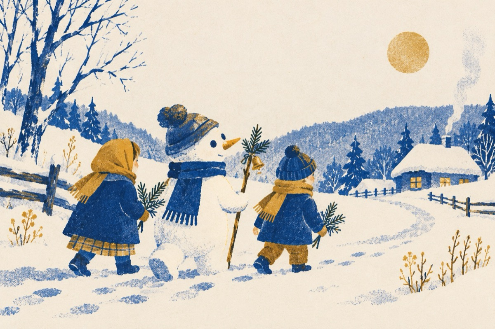

Copii colindători
Am venit să colindăm
Florile dalbe
Pe voi să vă bucurăm
Florile dalbe
Cu năsuc de morcovel
Florile dalbe
Să vă-nveselim nițel
Florile dalbe
Și cu ochii din cărbune
Florle dalbe
Am venit cu-un scop anume
Florile dalbe
Astăzi s-a născut Christos
Florile dalbe
Iar noi am pornit pe jos
Florile dalbe
Pe la case să venim
Florile dalbe
Numele dsă îl slăvim
Florile dalbe
La anul și la mulți ani
Vasile Groza